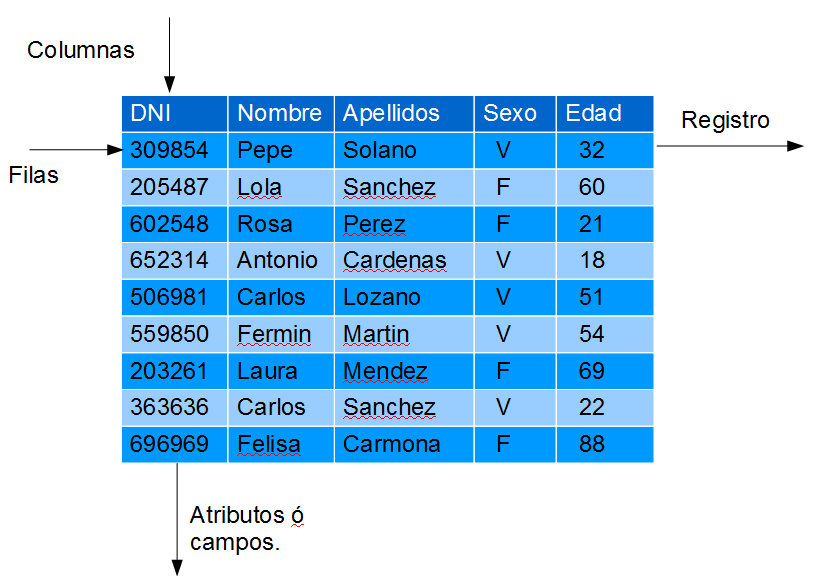
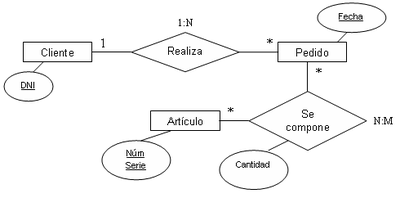
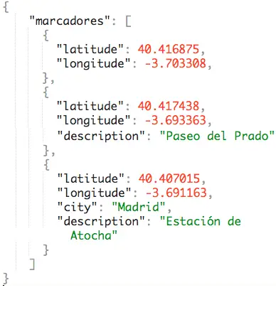

El Modelo de datos es una colección de herramientas conceptuales para describir los datos, sus relaciones, su semántica y las restricciones de consistencia. Los modelos de datos ofrecen un modo de describir el diseño de las bases de datos en sus tres niveles y pueden clasificarse en cuatro categorías diferentes:
- Modelo relacional. El modelo relacional usa una colección de tablas para representar tanto los datos como sus relaciones. Cada tabla tiene varias columnas, y cada columna tiene un nombre único. El modelo relacional es un ejemplo de un modelo basado en registros. Los modelos basados en registros se denominan así porque la base de datos se estructura en registros de formato fijo de varios tipos. Cada tabla contiene registros de un tipo dado. Cada tipo de registro define un número fijo de campos o atributos. Las columnas de la tabla se corresponden con los atributos del tipo de registro. El modelo de datos relacional es el modelo de datos más ampliamente usado, y una gran mayoría de sistemas de bases de datos actuales se basan en el modelo relacional.

- El modelo entidad-relación. El modelo de datos entidad-relación (E-R) se basa en una percepción del mundo real que consiste en una colección de objetos básicos, denominados entidades, y de las relaciones entre ellos. Una entidad es una “cosa” u “objeto” del mundo real que es distinguible de otros objetos. El modelo entidad-relación se usa mucho en el diseño de bases de datos.
- Modelo de datos orientado a objetos. El modelo de datos orientado a objetos es otro modelo de datos que está recibiendo una atención creciente. El modelo orientado a objetos se puede considerar como una extensión del modelo E-R con los conceptos de la encapsulación, los métodos (funciones) y la identidad de los objetos.
- Modelo de datos semiestructurados. El modelo de datos semiestructurados permite la especificación de datos donde los elementos de datos individuales del mismo tipo pueden tener diferentes conjuntos de atributos. Esto lo diferencia de los modelos de datos mencionados anteriormente, en los que cada elemento de datos de un tipo particular debe tener el mismo conjunto de atributos. El lenguaje de marcas extensible (XML, eXtensible Markup Language) se emplea mucho para representar datos semiestructurados.
- El modelo de datos de red y el modelo de datos jerárquico precedieron cronológicamente al relacional. Estos modelos estuvieron íntimamente ligados a la implementación subyacente y complicaban la tarea del modelado de datos. En consecuencia, se usan muy poco hoy en día, excepto en el código de bases de datos antiguas que sigue estando en servicio en algunos lugares.